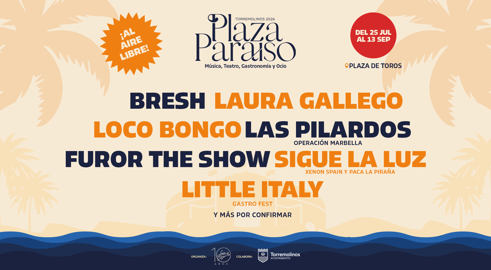
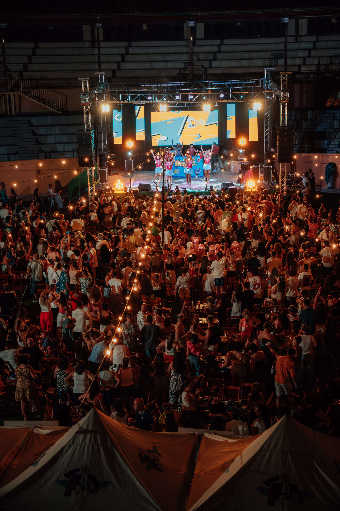

Los mejores planes para hacer en Málaga este verano
Playa, cultura, gastronomía y una agenda de ocio que no para. La guía definitiva de la Costa del Sol para 2026, con Plaza Paraíso en Torremolinos como plan estrella de la temporada.
28 jun 20267 min de lecturaGuía · Málaga

Plaza Paraíso Torremolinos 2026 · Del 25 de julio al 13 de septiembre en la Plaza de Toros
Málaga en verano tiene playa, cultura, gastronomía y una agenda de ocio que no para. Hay planes para todos los presupuestos: desde espetos en chiringuito y rutas de naturaleza gratuitas hasta festivales de música al aire libre. Del 25 de julio al 13 de septiembre, el plan imprescindible de la temporada es Plaza Paraíso en Torremolinos, el festival de ocio más especial y asequible de toda la Costa del Sol.
Málaga en verano es otra cosa. El año pasado, la Costa del Sol recibió más de 6,2 millones de turistas solo entre junio y agosto, un récord histórico. No es casualidad. Más de 300 días de sol al año, 160 kilómetros de costa mediterránea y una agenda que mezcla cultura, naturaleza, gastronomía y fiesta sin que tengas que elegir.
Si estás planeando los mejores planes para hacer en Málaga este verano, esta es tu guía definitiva. La hemos organizado por categorías para que encuentres exactamente lo que buscas, ya sea un plan gratuito, una aventura en la naturaleza o el festival de la temporada.
Y antes de entrar en el listado: hay un plan que merece su propio apartado. Uno que resume todo lo que hace grande al verano malagueño. Te lo contamos enseguida.

Ambiente en el ruedo de la Plaza de Toros de Torremolinos · Plaza Paraíso
El plan estrella del verano: Plaza Paraíso en Torremolinos
Si solo puedes hacer una cosa en Málaga este verano, que sea esta.
¿Qué es Plaza Paraíso?
El plan estrella
Plaza Paraíso
Plaza Paraíso es el festival de ocio y entretenimiento más especial de la temporada en la Costa del Sol. Funciona del 25 de julio al 13 de septiembre en un escenario único: la histórica Plaza de Toros de Torremolinos, transformada en un espacio al aire libre con música, ambiente, food trucks y una energía que no encontrarás en ningún otro sitio.
No es solo un evento. Es el punto de encuentro del verano malagueño. El recinto lo tiene todo: césped artificial para sentarte y relajarte, iluminación de guirnaldas al caer la tarde, decoración temática que cambia con cada propuesta, barras y zonas de encuentro. Y en los momentos más especiales, fuegos artificiales que iluminan el cielo de Torremolinos.
Plaza Paraíso no es un solo concierto. Es una temporada entera con propuestas diferentes cada semana. Aquí está el calendario:
Julio: La apertura El 25 de julio abre con Loco Bongo, la fiesta de la temporada de apertura. Los sábados (1 y 15 de agosto) Loco Bongo vuelve con su atmósfera única de tardeo y celebración.
Agosto: El corazón del verano
Viernes 7 de agosto:Laura Gallego presenta «La Última Folclórica», fusionando copla tradicional con electrónica. Es el concierto de la temporada.
Domingos de agosto (2, 9 y 16):Furor The Show, el concurso musical de televisión en directo. Ambiente de interacción y diversión pura.
Jueves 13 de agosto: Sigue la Luz con Xenon Spain y Paca la Piraña, un espectáculo divertidísimo con el que las risas están aseguradas.
Viernes 21 de agosto:Las Pilardos traen su comedia más gamberra en «Operación Marbella». El mejor comedy del verano, al aire libre.
Jueves 27 y viernes 28 de agosto:Little Italy Gastro Fest, un festival gastronómico dedicado a la comida italiana con propuestas de calidad.
Septiembre: La despedida
Sábado 12 de septiembre:Bresh cierra la temporada con su fiesta de despedida de verano.
Domingo 13 de septiembre: Loco Bongo regresa para el cierre de la temporada.
Cada propuesta está cuidada al detalle: desde la escenografía hasta la gastronomía, pasando por el sonido envolvente bajo las estrellas.
Ubicación, horarios y cómo llegar
Dónde: Plaza de Toros de Torremolinos, Málaga Cuándo: 25 de julio — 13 de septiembre 2026 Horarios: Generalmente de 19:00 a 23:30 (varía según evento)
Si vienes desde Málaga capital, Plaza Paraíso está a solo 20–25 minutos en coche. Desde otros puntos de la Costa del Sol, es el destino más accesible de la región. Torremolinos cuenta con aparcamientos cercanos y buena conectividad con transporte público.
Precios y entradas
Las entradas varían según el evento, pero rondan entre los 5 € y 25 € dependiendo del artista y la zona (pista o mesas VIP). Se recomienda comprar con antelación en la web oficial de Plaza Paraíso, donde además encontrarás promociones para grupos y compras anticipadas.
Pro tip: Los jueves y domingos suelen ser más tranquilos que viernes y sábados. Si prefieres menos aglomeración, elige esos días.
¿Cuándo es el mejor momento para ir a Málaga en verano?
Junio y septiembre son los meses más inteligentes para visitar Málaga en verano. Hay buen tiempo, menos gente y precios más bajos. Julio y agosto concentran la mayor parte de festivales y eventos, pero también el mayor calor y las multitudes de temporada alta.
Para hacerte una idea: la Costa del Sol cerró mayo de 2026 con una ocupación hotelera media del 87,13%, según AEHCOS. En julio y agosto eso se acerca al lleno total.
Si viajas en junio, pillas la Noche de San Juan (23 de junio). Si prefieres septiembre, tienes menos aglomeraciones, el mar sigue caliente y la agenda de ocio no ha terminado. Plaza Paraíso, por ejemplo, llega hasta el 13 de septiembre.
Planes de naturaleza y aventura: lo mejor de la provincia
El Caminito del Rey es el plan de naturaleza imprescindible de la provincia de Málaga. Son 7,7 km de pasarelas colgantes a más de 100 metros sobre el río Guadalhorce, con vistas espectaculares al desfiladero de Los Gaitanes. La entrada general cuesta desde 10 euros por persona.
Está a 45 minutos de Málaga capital y necesitas reserva previa. Es uno de los senderos más fotografiados de Europa. Si tienes vértigo, no es el plan para ti. Si no, es imprescindible.
Más opciones al aire libre que no cuestan mucho:
Kayak y paddleboard en la Costa del Sol. En Torremolinos, Benalmádena y Fuengirola alquilan equipos sin necesidad de experiencia. Es otra forma de ver la costa y refrescarse a la vez.
Cueva de Nerja. A 50 km de la capital, con un auditorio natural dentro donde se celebran conciertos en verano. Combínalo con las playas de Burriana o El Playazo y tienes un día perfecto.
Pozas y ríos del interior. Si quieres escapar de las playas masificadas, los pueblos del interior de Málaga tienen rincones naturales con agua que muy poca gente conoce. Un plan gratuito y muy diferente.
Los mejores festivales y conciertos en Málaga este verano
Málaga tiene en verano una agenda musical de primer nivel, con festivales al aire libre repartidos por toda la provincia. El más especial y asequible de la temporada es Plaza Paraíso en Torremolinos, con eventos confirmados como Laura Gallego el 7 de agosto, Las Pilardos el 21 de agosto y Furor The Show los domingos de agosto. Luego están Marenostrum Fuengirola, Starlite Marbella y el Weekend Beach Festival en Torre del Mar.
Marenostrum Fuengirola es uno de los escenarios de concierto más bonitos de España. El Castillo Sohail con el Mediterráneo de fondo convierte cada actuación en algo más que un concierto. Los precios varían según el artista, pero hay opciones para todos los bolsillos.
Starlite Marbella es la propuesta más premium: conciertos boutique de aforo reducido en la Cantera de Nagüeles, con casi 50 fechas entre junio y agosto.
Y luego está Furor The Show, uno de los tardeos al aire libre más divertidos del verano. Inspirado en el icónico concurso de televisión, reúne al público en la Plaza de Toros de Torremolinos para cantar, jugar y pasarlo en grande bajo el sol de la tarde. Los domingos 2, 9 y 16 de agosto no tienen desperdicio.
Furor The Show en Plaza Paraíso Torremolinos · Tardeo al aire libre, domingos de agosto
Y luego está Plaza Paraíso. No es un solo concierto ni un festival de varios días. Es una temporada entera de ocio al aire libre en Torremolinos, con propuestas que van cambiando semana a semana. El plan que más se repite del verano.
Cultura en Málaga capital: museos, historia y arte
Málaga tiene uno de los centros históricos más ricos de Andalucía. Y en verano, muchos de sus atractivos culturales amplían horarios y propuestas.
Museo Picasso Málaga. Picasso nació aquí y la ciudad lo celebra bien. El Palacio de Buenavista, del siglo XVI, ya merece la visita por sí solo. En verano amplía su programación. Perfecto para las horas de más calor.
Alcazaba y Teatro Romano.La entrada a la Alcazaba parte desde 3,50 euros y el Teatro Romano es gratuito. Juntos forman uno de los conjuntos monumentales más impresionantes de Andalucía. En verano hay horario nocturno: verlo con las luces de la ciudad al fondo es una experiencia completamente diferente.
Centre Pompidou Málaga. El único Centre Pompidou fuera de Francia, en el Muelle Uno. Su cubo multicolor alberga obras de Miró, Bacon y Picasso, además de exposiciones temporales. Ideal para escapar del calor de agosto con dosis de arte contemporáneo.
Gastronomía malagueña: los platos que no puedes saltarte
Los espetos de sardinas son el plato más auténtico del verano malagueño. Se asan sobre brasas en la arena, ensartadas en cañas, en los chiringuitos de toda la Costa del Sol. Los mejores están en Pedregalejo, El Palo y La Carihuela (Torremolinos). Es un ritual de verano, no solo una comida.
Pero hay más platos que tienes que probar:
Porra antequerana. Más espesa y sabrosa que el salmorejo. Una crema fría de tomate, pan y aceite que en verano se convierte en el almuerzo perfecto. Mejor en Antequera o en los bares del centro histórico de Málaga.
Ajoblanco. La gran desconocida de la gastronomía malagueña. Una crema fría de almendras y ajo que refresca como ninguna otra cosa. Si solo pruebas un plato nuevo en Málaga este verano, que sea este.
Y si estás en Torremolinos para disfrutar de Plaza Paraíso, los food trucks del recinto ofrecen propuestas para todos los gustos. Del picoteo informal a sabores de medio mundo, sin moverte del mejor plan del verano.
Planes gratuitos y low cost en Málaga este verano
Málaga es generosa. Hay muchísimas cosas que hacer sin gastar casi nada.
Noche de San Juan (23 de junio). Las playas de toda la Costa del Sol se llenan de hogueras, música y miles de personas. En Torremolinos se vive con especial intensidad. Entrada libre. Uno de los planes más bonitos del año.
Feria de Málaga (agosto). Durante la segunda quincena de agosto, la ciudad se transforma. Los conciertos del recinto ferial son gratuitos. El ambiente de las casetas del centro histórico, también. El plan más andaluz y más masivo del verano.
Paseo por el Muelle Uno y el Puerto. Restaurantes con terraza frente al mar, el Palmeral de las Sorpresas para pasear al atardecer y actuaciones en vivo. El plan más sencillo y más agradable de Málaga capital.
Castillo de Gibralfaro al atardecer. Desde aquí se domina toda Málaga, el puerto y el Mediterráneo. La subida a pie dura unos 30-40 minutos. Al caer la tarde, con la ciudad iluminada a los pies, la experiencia no tiene precio.
Pueblos blancos. Frigiliana, Mijas, Ronda: escapadas de un día que cuestan poco y ofrecen mucho. Frigiliana es quizá el más fotogénico. Ronda y su Puente Nuevo, los más impresionantes. Una excursión a cualquiera de los pueblos blancos cambia completamente el registro del viaje.
Conclusión
Málaga en verano da mucho. Playa, cultura, gastronomía, aventura en la naturaleza y una agenda de ocio que no para. Y casi todo, a precios razonables.
Si tienes que quedarte con tres ideas: haz el Caminito del Rey, come espetos en La Carihuela y ve a Plaza Paraíso en Torremolinos. Esos tres planes resumen todo lo que hace grande al verano malagueño.
Y si solo puedes hacer una cosa, ya sabes cuál es. La temporada de Plaza Paraíso va del 25 de julio al 13 de septiembre. Tienes eventos casi cada tarde: Loco Bongo para las fiestas de sábados, Laura Gallego el 7 de agosto para concierto, Las Pilardos el 21 de agosto para comedia, y mucho más. Es el festival de ocio más especial de la Costa del Sol y el plan que este verano se va a repetir más veces.
Compra tus entradas para Plaza Paraíso y asegúrate tu lugar en el evento del verano.
Preguntas frecuentes sobre planes en Málaga en verano
¿Cuándo es mejor ir a Málaga en verano?
Junio y septiembre son los meses más cómodos para visitar Málaga en verano: buen tiempo, menos aglomeraciones y precios más bajos. Julio y agosto concentran la mayor parte de festivales y eventos, pero también el mayor calor y la temporada alta con hoteles casi al 100% de ocupación. Si puedes elegir, ve en junio o septiembre.
¿Qué planes son gratuitos en Málaga en verano?
Muchos. La Noche de San Juan (23 de junio) en todas las playas de la Costa del Sol, los conciertos de la Feria de Málaga en agosto, el Teatro Romano en el centro, el paseo por el Muelle Uno y la subida al Castillo de Gibralfaro al atardecer. Málaga no requiere presupuesto grande para disfrutarla.
¿Cuáles son los eventos de Plaza Paraíso en agosto 2026?
Plaza Paraíso tiene eventos confirmados del 25 de julio al 13 de septiembre. Los principales en agosto son: Laura Gallego el 7 de agosto (concierto de copla-electrónica), Las Pilardos el 21 de agosto (comedia), Furor The Show los domingos (2, 9, 16 de agosto), Sigue la Luz el 13 de agosto, y Little Italy Gastro Fest el 27 y 28 de agosto. Los sábados hay Loco Bongo.
¿Cómo moverse por la provincia de Málaga en verano?
El tren de Cercanías conecta Málaga capital con Torremolinos, Benalmádena y Fuengirola de forma rápida y económica. Para visitas a Nerja, Ronda o los pueblos blancos, lo más cómodo es el coche o los tours organizados desde la capital. En julio y agosto, la A-7 puede tener mucho tráfico: mejor salir temprano o usar el tren siempre que puedas.
¿Cuál es el mejor festival de música en Málaga este verano?
Depende del presupuesto y el estilo. Marenostrum Fuengirola y Starlite Marbella son los más conocidos, con artistas de primer nivel. Pero el plan más especial y repetible de la temporada es Plaza Paraíso en Torremolinos: una propuesta que dura toda la temporada estival (25 julio – 13 septiembre), con ambiente único en la Plaza de Toros y precios asequibles para cualquier bolsillo.
Durante todo el verano, el ruedo deja de ser una plaza para convertirse en un espacio idílico al aire libre, pensado al detalle para que cada tarde sea inolvidable.
Food trucksUna selección de food trucks con propuestas para todos los gustos, del picoteo informal a sabores de medio mundo.
Iluminación de veranoGuirnaldas, luces cálidas y ambiente nocturno que envuelven la plaza al caer la tarde.
Decoración temáticaUna ambientación cuidada al detalle que cambia con cada propuesta para sumergirte en el espíritu de cada evento.
Césped artificialZonas chill con césped para sentarte, relajarte y disfrutar del ambiente entre espectáculo y espectáculo.
Fuegos artificialesMomentos mágicos con espectáculos pirotécnicos que iluminan el cielo de la Costa del Sol.
Ambiente únicoBarras, zonas de encuentro y el mejor buen rollo para compartir, descubrir y repetir todo el verano.
Nos vemos en la plaza
No te quedes sin tu plan de verano
Las entradas para los eventos de Plaza Paraíso ya están a la venta. Consigue tu sitio para vivir el mejor verano en Torremolinos.